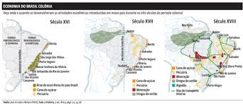

Bem vindo a uma explicação do melhor País do mundo
.
Historia do Brasil
A História do Brasil é dividida em cinco grandes períodos: Pré-Cabralino, Pré-Colonial, Colonial, Imperial e
Republicano. Essa divisão ajuda a entender melhor as transformações sociais, políticas, econômicas e culturais que o
Brasil passou ao longo dos séculos. Cada um desses períodos marcou mudanças importantes na vida das pessoas que viviam
aqui, desde os povos originários até a formação do país como conhecemos hoje.
🏞️ Período Pré-Cabralino (antes de 1500)
O período Pré-Cabralino é aquele que corresponde à história do território brasileiro antes da chegada dos portugueses,
ou seja, antes do ano de 1500, quando Pedro Álvares Cabral chegou ao Brasil. Nessa época, o Brasil não existia como país
— o que havia eram milhões de indígenas vivendo em diversas regiões do território, organizados em centenas de povos e
culturas diferentes.
Esses povos indígenas tinham suas próprias línguas, religiões, tradições, formas de governo, agricultura e conhecimentos
sobre a natureza. Muitas tribos viviam da pesca, da caça, do cultivo de mandioca e milho, e da coleta de frutos. Eles
possuíam uma relação profunda com a natureza, e viviam em sociedades complexas — algumas nômades, outras sedentárias.
Infelizmente, por muito tempo a história indígena foi ignorada ou tratada como um "vazio" histórico. Hoje sabemos que o
Brasil já tinha uma rica diversidade cultural muito antes da chegada dos europeus.
🚢 Período Pré-Colonial (1500–1530)
Com a chegada dos portugueses em 1500, começa o chamado período Pré-Colonial. Apesar do "descobrimento", os portugueses
não colonizaram imediatamente o Brasil. Por cerca de 30 anos, o território foi usado principalmente como ponto de parada
de navios e para extração do pau-brasil, uma árvore valiosa da época.
Durante esse período, os portugueses estabeleceram relações com os indígenas — algumas pacíficas, outras violentas. Eles
trocavam mercadorias com os povos nativos, que ajudavam a cortar e transportar o pau-brasil. No entanto, o interesse
real em colonizar só veio a partir de 1530, quando Portugal passou a se preocupar com a ameaça de invasão por outros
países europeus.
🏰 Período Colonial (1530–1822)
O Período Colonial marca o início da colonização oficial do Brasil. Foi nessa época que os portugueses criaram as
primeiras vilas, traziam pessoas de Portugal e começavam a usar o território para gerar riqueza para a Coroa portuguesa.
O Brasil passou por diferentes ciclos econômicos nesse período, como:
O ciclo do açúcar, principalmente no Nordeste
A mineração de ouro e pedras preciosas, em Minas Gerais
A expansão da pecuária e agricultura pelo interior
Infelizmente, esse período também foi marcado pela escravidão: milhões de africanos foram trazidos à força para
trabalhar nas lavouras e nas minas, sofrendo com maus-tratos e desumanidade.
👑 Período Imperial (1822–1889)
O Período Imperial começa com a Independência do Brasil, em 1822, quando Dom Pedro I declara que o Brasil não seria mais
colônia de Portugal. Nesse momento, o país se torna uma monarquia, governado por um imperador.
Durante esse tempo, o Brasil enfrentou muitas lutas políticas internas, disputas por poder, guerras (como a do Paraguai)
e crises econômicas. Dom Pedro I foi substituído por seu filho, Dom Pedro II, que governou por décadas.
Esse período termina com a Proclamação da República, em 1889, quando o imperador foi deposto e o Brasil deixou de ser
uma monarquia.
🟢 Período Republicano (1889–atualmente)
Esse é o período em que o Brasil passa a ser um país governado por presidentes, em vez de reis ou imperadores. A
república passou por várias fases diferentes:
República Velha (1889–1930)
Era Vargas (1930–1945)
Ditadura Militar (1964–1985)
Nova República (1985 até hoje)
A República foi marcada por desenvolvimentos importantes, como a industrialização, o crescimento das cidades, a luta por
direitos civis, e o fortalecimento da democracia (ainda que com altos e baixos).
Hoje, o Brasil vive em um regime democrático, com eleições diretas, liberdade de expressão e instituições públicas,
mesmo enfrentando desafios como desigualdade social, corrupção e violência.
A história do Brasil começou com a ocupação dos seres humanos a cerca de 12-20 mil anos.
No século XVI, os portugueses começaram a colonizar estas terras e transferiram africanos para serem mão de obra
escrava nos engenhos que construíram aqui.
Por sua vez, estes trabalhadores forçados trariam novos alimentos e animais que mudariam a história dos povos
originários para sempre.
Pré-História ou período Pré-Cabralino
⬆️
Há evidências da presença de humanos no Brasil há pelo menos 12 mil anos. Cerca de três grandes grupos de seres
humanos primitivos ocuparam o Brasil, como os caçadores-coletores, os sambaquis e os povos agricultores.
Podemos encontrar vestígios dos povos da pré-história em vários pontos do Brasil como, por exemplo, na Serra da
Capivara (PI) ou em Lajedo de Soledade (RS).
Chegada dos portugueses ao território (1500)
Em 1500, os portugueses se deram conta que há terras no sul da linha do Equador e passaram a ocupar o
território. Isto mudaria para sempre a vida dos povos indígenas, dos africanos e dos europeus.
De acordo com a história oficial do Brasil, este período é denominado “colonial”, pois o território passou a ser
uma colônia do Reino de Portugal.
Pré-colonial (1500-1822)
⬆️
Chama-se período colonial a época que vai de 1500 até 1822, ano da independência do Brasil.
Nesta época, o Brasil era governado por Portugal e isto significava que suas riquezas deveriam ir para este
país. Também qualquer problema administrativo e com a justiça era resolvido ali.
Vejamos como se organizava a América Portuguesa.
Economia no período colonial

Os portugueses tinham como objetivo explorar as riquezas naturais do Brasil e o primeiro produto comercializado
foi o pau-brasil.
Depois, os portugueses transplantaram o cultivo da cana-de-açúcar, já praticado na Madeira, para as Américas.
Para trabalhar nestas plantações, os indígenas foram escravizados.
No entanto, para complementar a economia das feitorias portuguesas na África, o tráfico negreiro foi
estabelecido entre os dois continentes.
Organização política no período colonial
Para estimular o povoamento do novo território foi criado o sistema de Capitanias Hereditárias. Assim, uma
pessoa recebia a propriedade de uma grande extensão de terra e tinha como obrigação cuidar do território,
evitando invasões e gerando lucros através do trabalho agrícola.
Entre 1534 e 1536 foram distribuídas as 14 capitanias-hereditárias que existiram no Brasil.
Como as Capitanias Hereditárias não tiveram muito êxito, foi estabelecido o Governo-Geral cuja capital era
Salvador. Esta atitude representou uma tentativa de centralizar a administração da colônia e torná-la mais
eficiente.
Ocupação holandesa (1630-1644)
⬆️
Outros povos europeus estavam interessados nos territórios da América. Franceses já haviam tentado tomar o Rio de
Janeiro, mas foram expulsos pelos portugueses.
Igualmente, os holandeses expulsaram os portugueses do Nordeste e ali ficaram durante dez anos, até se retirarem a
partir de guerras e acordos diplomáticos.
Ouro em Minas Gerais
No século XVIII, os colonizadores, finalmente, encontraram ouro no atual estado de Minas Gerais.
A exploração mineira mudou o feitio da colônia: a capital foi transferida de Salvador para o Rio de Janeiro, para
que a coroa portuguesa pudesse melhor controlar a saída do metal.
Igualmente, houve uma grande emigração interna para esta região e a fundação de várias cidades no interior do
Brasil.
Inconfidência mineira (1789)
A Inconfidência (ou a Conjuração Mineira) foi um movimento para proclamar a independência da região de Minas Gerais.
O pretexto foi a cobrança dos impostos atrasados – a derrama – que seria decretada pelas autoridades.
Em vista disso, um grupo de mineradores e intelectuais planejou destituir o governador e tomar o poder. Os planos,
contudo, foram descobertos antes do dia combinado e os participantes foram presos.
Somente um deles, conhecido como Tiradentes, foi condenado à morte por enforcamento.
Chegada da Família Real ao Brasil (1808)
Dentro do período Colonial, a chegada da Família Real significou uma verdadeira mudança no Brasil.
Várias instituições foram criadas no Rio de Janeiro, como a Biblioteca Real, o Jardim Botânico, a Academia Militar.
A fim de aumentar o status do Brasil, Dom João o elevou o território à categoria de Reino Unido em dezembro de 1815
e os brasileiros passaram a ter o direito de enviar seus próprios deputados para a corte de Lisboa.
Período imperial (1822-1889)
⬆️
O período Imperial é subdividido em Primeiro Reinado, Período Regencial e Segundo Reinado.
Primeiro reinado (1822-1831)
A independência do Brasil foi alcançada em 1822 e o sistema de governo escolhido foi a monarquia constitucional.
O novo governo enfrentou a rebelião na Província da Cisplatina (1825-1828) e também o problema da sucessão do trono
português.
Como Dom Pedro I não havia renunciado à sua herança portuguesa, preferiu deixar o Brasil com seu filho menor de
idade e rumar para Portugal.
Período regencial (1831-1840)
Como o herdeiro do trono brasileiro tinha apenas cinco anos, o governo do país foi ocupado por sucessivas regências.
Este momento foi marcado por várias revoltas contra o governo central, como a Balaiada, a Sabinada e a Farroupilha.
Segundo reinado (1840-1889)
Diante das constantes revoltas, um grupo de conservadores passou a defender a antecipação da maioridade de Dom Pedro
II e reforçar o poder central. Esta manobra ficou conhecida com o Golpe da Maioridade.
Durante o Segundo Reinado, a cafeicultura se expandiu e substituiu o açúcar como o principal produto da pauta de
exportação.
Nesta mesma época, os britânicos começam a pressionar o Brasil pela abolição da escravidão, o que foi feita de
maneira gradual e sem indenização aos proprietários.
Isto causou uma verdadeira batalha política que fez com que a elite agrária não mais apoiasse a monarquia.
Igualmente, para suprir a mão de obra escrava, a imigração europeia foi estimulada.
Guerra do Paraguai (1864-1870)
A Guerra do Paraguai foi um conflito militar iniciado após o Paraguai ter invadido o território brasileiro para
atacar a Argentina.
Foi uma guerra que profissionalizou o Exército brasileiro e deixou os militares conscientes de sua força política. A
ideia de república, sobretudo de características positivistas, passou a crescer entre os oficiais brasileiros.
Período republicano (1889 - dias atuais)
⬆️
A república é instaurada depois de um golpe realizado por um grupo de militares em 15 de novembro de 1889. Uma nova
Constituição foi promulgada em 1891 e várias rebeliões aconteceram no Brasil contra o novo regime político. Destaque
para as guerras de Canudos e do Contestado e a Revolta da Armada.
A cena política foi dominada pelas oligarquias estaduais, que conseguiram resultados favoráveis nas eleições através
de fraudes.
Para combatê-las, os estados prejudicados com este arranjo de poder se revoltaram em 1930, com Getúlio Vargas à
frente do movimento. Derrubando Washington Luís através de um golpe de Estado, Vargas assumiu a presidência, onde
comandou por 15 anos consecutivos.
Era Vargas (1930-1945)
O governo de Getúlio Vargas foi marcado por fases distintas. Primeiro, Vargas escolheu os interventores estaduais, o
que desagradou a elite paulista. O resultado foi a Revolução de 32 e a promulgação da Carta Magna em 1934.
No entanto, devido à crescente mobilização de grupos de esquerda, concretizada na Revolta Comunista de 1935, Vargas
institui o Estado Novo, onde as eleições foram suspensas e o Congresso fechado.
A Era Vargas coincidiu com a imigração do campo para a cidade e a crescente industrialização do Brasil. Por isso,
Vargas buscou o apoio destes trabalhadores através da promulgação das leis trabalhistas que pautarão as relações de
classe no Brasil até os anos 90.
República Nova (1945-1964)
Neste período, a sucessão presidencial e as eleições ocorreram sem interrupções até a ditadura militar em 1964.
Em 45, com o fim da Segunda Guerra, a ditadura varguista é criticada abertamente. Desta maneira, o Exército aplicou
um golpe e instituiu eleições, de onde saiu vencedor o general Eurico Gaspar Dutra.
Vargas o sucedeu e este mandato foi definido por uma intensa campanha pela nacionalização do petróleo, que culminou
na criação da Petrobras. No entanto, o possível envolvimento do presidente com a tentativa de assassinato de Carlos
Lacerda precipitou seu suicídio, em 1954.
Com a eleição de Juscelino Kubitschek, o Brasil entrou na fase do desenvolvimentismo, onde os recursos foram
canalizados para a construção de Brasília e a substituição de importações.
JK, como ficou conhecido, foi sucedido por Jânio Quadros, num governo que se aproximou de países socialistas como
Cuba e China.
Jânio Quadros renuncia e seu vice-presidente, João Goulart (Jango) não é bem-visto pela maioria dos políticos por
sua tendência progressista. Apesar disso, Jango consegue tomar posse, mas os militares e a sociedade civil dão um
golpe em março de 64, quando se instala o regime militar.
Ditadura Militar (1964-1985)
A ditadura militar foi marcada pela censura, fim das eleições, perseguição a movimentos políticos considerados
dissidentes e centralização política.
O regime militar, no final dos anos 70, foi se abrindo e concedendo liberdades políticas aos cidadãos de forma
gradual com o objetivo de preparar a transição política.
Esta foi realizada através da Lei da Anistia que permitiu a volta dos exilados, o fim da censura e as campanhas
civis pelas Diretas Já.
República Nova (1985 - dias atuais)
A República Nova se iniciou com a eleição indireta de Tancredo Neves à presidência, porém sua morte prematura o fez
ser substituído por José Sarney.
Coube a este presidente convocar a Assembleia Constituinte e tentar reorganizar a economia brasileira que era
devorada pela inflação.
Mesmo assim, Sarney terminou o mandato e Collor de Mello, em 1989, se tornou o primeiro presidente eleito por voto
direto em vinte e cinco anos.
Começava, então, a época do neoliberalismo no Brasil, onde houve a privatização de estatais, diminuição dos direitos
trabalhistas e abertura do mercado nacional.
Acusado de corrupção por aliados e opositores, a população vai às ruas pedir o impeachment do presidente, em um
movimento conhecido como "Caras-Pintadas". Collor então preferiu renunciar a ser processado.
O vice-presidente de Collor de Mello, Itamar Franco, assume e ataca a inflação através do Plano Real, capitaneado
pelo ministro da Fazenda, Fernando Henrique Cardoso.
Este ganharia as eleições de 1994 e passaria a emenda constitucional que garantia a reeleição dos cargos executivos,
O próprio Fernando Henrique seria reeleito.
FHC, como passou à história, fez uma reforma no Estado brasileiro, adequando-o às pautas neoliberais. Contudo,
embora a economia do país estivesse estabilizada, a má distribuição de renda continuava, o que impedia um verdadeiro
crescimento do Brasil.
Com a eleição de Lula da Silva, em 2003, pela primeira vez um partido de esquerda chegava ao governo no Brasil.
Apesar de sua aliança com setores conservadores houve uma diminuição real da miséria no país, conseguido graças à
valorização dos preços das matérias-primas no mercado internacional.
Lula ainda repetiria o mandato, porém sua segunda passagem pela presidência foi pautada pelas denúncias de corrupção
de vários aliados próximos ao presidente. Mesmo assim, o mandatário conseguiu passar o cargo para sua herdeira
política, Dilma Rousseff.